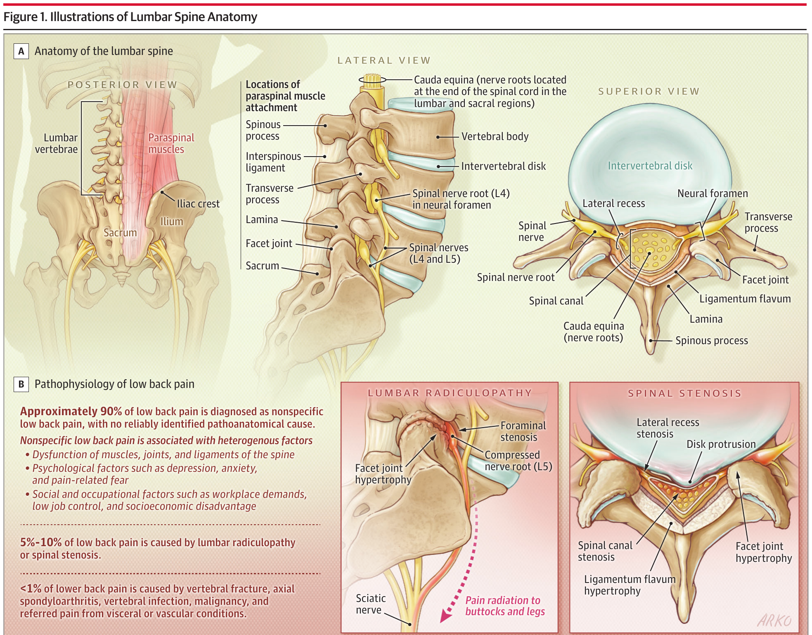

本ページで使用する略語一覧
| 略語 | 正式名称 — 日本語訳 |
| NSAID | Non-Steroidal Anti-Inflammatory Drug — 非ステロイド性抗炎症薬 |
| COX-2 | Cyclooxygenase-2 — シクロオキシゲナーゼ2（選択的阻害薬＝セレコキシブ等） |
| CBT | Cognitive Behavioral Therapy — 認知行動療法 |
| CFT | Cognitive Functional Therapy — 認知機能療法（RESTORE 試験） |
| MRI / CT | Magnetic Resonance Imaging / Computed Tomography — 磁気共鳴画像 / コンピュータ断層撮影 |
| ACP | American College of Physicians — 米国内科学会（GL） |
| NICE | National Institute for Health and Care Excellence — 英国国立医療技術評価機構（GL） |
| WHO | World Health Organization — 世界保健機関（GL） |
| GBD | Global Burden of Disease study — 世界疾病負荷研究 |
| STarT Back | Subgroups for Targeted Treatment Back screening tool — 予後リスク層別化スクリーニングツール |
| SLR | Straight Leg Raise test — 下肢伸展挙上テスト（SLRテスト） |
| MCID | Minimal Clinically Important Difference — 臨床的に意味のある最小変化量 |
| OR / RR | Odds Ratio / Risk Ratio — オッズ比 / リスク比（>1＝リスク増加） |
| MD / SMD | Mean Difference / Standardized Mean Difference — 平均差 / 標準化平均差 |
| CI | Confidence Interval — 信頼区間 |
| NNH | Number Needed to Harm — 有害必要数 |
| SNRI | Serotonin-Norepinephrine Reuptake Inhibitor — セロトニン・ノルアドレナリン再取り込み阻害薬（デュロキセチン等） |
| TENS | Transcutaneous Electrical Nerve Stimulation — 経皮的電気神経刺激 |
| RCT | Randomized Clinical Trial — ランダム化比較試験 |
この総説について
腰痛は世界で約6.19億人が罹患し、障害生存年数（YLD）の世界第1位の原因である。本総説（JAMA 2026）は、外来診療における非特異的腰痛（特定の脊椎疾患に起因しない腰痛）の疫学・病態・臨床評価・予後・治療を、WHO・ACP・NICE の最新ガイドラインと最近のRCT/メタ解析に基づいてまとめている。受診患者の約90%は非特異的腰痛であり、研修医・内科系集中治療医が外来・病棟で遭遇する大多数の腰痛がこれに該当する。
PubMed（2005年1月〜2026年2月）から英語のRCT・コホート・SR/メタ解析を「nonspecific low back pain」で検索し、1428件中108件（メタ解析50・RCT 18・SR 15・前向きコホート13・国際GL 8・Delphi 3・横断研究1）を採用している。
SECTION 1 非特異的腰痛とは ― 定義と分類
解剖学的定義と「非特異的」の意味
腰痛は肋骨縁より下・殿溝（下殿溝）より上に局在する痛みと定義され、下肢痛を伴う場合と伴わない場合がある。痛みは皮膚分節（デルマトーム）に沿わずに殿部や大腿へ放散しうる。
非特異的腰痛とは、特定の基礎疾患（神経根症・脊柱管狭窄症・軸性脊椎関節炎・骨折・感染・悪性腫瘍）を示唆する臨床的特徴がなく、かつ脊椎以外の構造（腎・消化管・骨盤・血管）からの関連痛でもない腰痛を指す。すなわち既知の病理解剖学的原因がない腰痛であり、特定の原因が同定されないときにこの名称が用いられる。プライマリケアでは、腰痛の10%未満のみが特異的脊椎原因による。
期間による分類 ― 急性・亜急性・慢性
非特異的腰痛は症状の持続期間によって分類され、治療方針と予後がこの分類で大きく変わる。
急性（acute）：持続期間が6週未満。多くは自然軽快し、治療の有無にかかわらず約6週で疼痛・機能が大きく改善する。
亜急性（subacute）：持続期間が6〜12週。慢性化への移行期で、予後スクリーニングが有用な時期。
慢性（chronic）：持続期間が12週超。予後は比較的不良で、生物心理社会的アプローチが治療の中心となる。
原因の頻度分布 ― 「9割は非特異的」
腰痛で受診する患者の原因別頻度を理解することが、過剰検査を避け患者を安心させる出発点になる。
（原因同定できず）
脊柱管狭窄症
感染・悪性腫瘍ほか
骨折・軸性脊椎関節炎・脊椎感染・悪性腫瘍、および内臓・血管由来の関連痛は、それぞれ腰痛患者の1%未満にとどまる。馬尾症候群はプライマリケア受診者の0.1%に過ぎない。
SECTION 2 疫学とリスク因子
世界的負荷と有病率
GBD研究は2020年に世界で6.19億人が腰痛を有すると推計した。年齢標準化有病率は女性（9330/10万人）が男性（5520/10万人）より高い。有病率は加齢とともに上昇し、約85歳でピークに達する。米国では労働者の約4人に1人が腰痛を報告し、成人の平均生涯有病率は約40%である。
有病者数（2020）
生涯有病率
ピークとなる年齢
リスク因子 ― 修正可能な因子に注目
腰痛の有病率を高める因子のうち、肥満・抑うつ・喫煙・職業曝露は介入の余地がある。問診ではこれらを系統的に把握する。
| リスク因子 | 関連の強さ（効果量） |
|---|---|
| 肥満 | OR 1.5（95%CI 1.2–1.9） |
| 抑うつ症状 | OR 1.6（95%CI 1.3–2.0） |
| 重量物挙上 （職業曝露） | OR 1.10（95%CI 1.01–1.20）／10 kg 挙上あたり |
| 喫煙 | 関連あり（メタ解析） |
| 慢性疾患 （糖尿病・喘息等） | 関連あり（アンブレラレビュー） |
| 腰痛の既往 | 最も強い予測因子の一つ（76%が既往あり） |
SECTION 3 病態生理 ― 生物心理社会モデル（Figure 1）
病理解剖学的原因の不在と痛みの多因子性
非特異的腰痛がどのように発症し遷延するかの機序は依然として不明である。「非特異的」という用語は既知の病理解剖学的原因がないことを意味する。腰部の筋・筋膜・靱帯・腱・椎間関節・神経血管要素・椎体・椎間板など多くの構造が痛みを生じうるが、痛みの発生源となる特定構造を確実に同定する方法は存在しない。外傷や感染によりこれら構造が損傷した稀な場合にのみ、特異的腰痛となる。
非特異的腰痛は、生物学的因子（背部の筋・関節・靱帯の機能不全）に加え、心理的因子（抑うつ・不安・腰痛に対する否定的信念）、社会的・職業的因子（職場の負荷・低い職務裁量）、社会経済的不利が相互作用する異質な病態として概念化される。これら因子の組み合わせと寄与は個人ごとに異なり、症状と治療反応の多様性を説明する。
腰椎の解剖と特異的病態（Figure 1）
5–10%を占める神経根症・脊柱管狭窄症は、椎間板突出や椎間関節肥大・黄色靱帯肥厚による神経根・脊柱管の圧迫で生じる。これらの解剖学的理解は、非特異的腰痛との鑑別の前提となる。

SUMMARY 第1章のキーメッセージ
SECTION 4 臨床像と問診
典型的な臨床像
患者は痛みと活動関連の機能制限（屈曲・挙上・歩行の困難、長時間の坐位・立位の耐えがたさ）を訴える。痛みは肋骨縁と殿溝の間に局在し、デルマトームに沿わずに殿部・大腿へ放散しうる。症状は運動や持続姿勢で増悪し、安静や姿勢変換で軽減するのが典型である。
約30%の患者は誘因となる出来事を想起できず、76%が腰痛の既往を報告する。心血管・代謝（糖尿病等）・精神（抑うつ等）の併存疾患は非特異的腰痛患者の72%に存在すると推計される。これら併存症は予後・治療選択に影響するため必ず評価する。
非特異的腰痛は除外診断 ― 鑑別すべき脊椎外疾患
非特異的腰痛の診断は、特異的な脊椎疾患と脊椎外疾患を除外した後に下される。問診では脊椎以外の原因を意識的に鑑別する。
| 鑑別カテゴリ | 具体例 |
|---|---|
| 股関節病変 | 股関節変形性関節症など |
| 内臓由来 | 膵炎・消化管・腎/尿路・婦人科疾患 |
| 血管疾患 | 腹部拍動・動脈硬化リスク（腹部大動脈瘤・末梢動脈疾患） |
| ウイルス症候群 | 全身状態不良を伴うもの |
| 広範な疼痛 | 脊椎を含む他部位からの広汎痛 |
SECTION 5 レッドフラッグと診断アルゴリズム（Figure 2）
重篤疾患を示唆するレッドフラッグ
癌・椎体骨折・感染の可能性を高めるレッドフラッグを問診で確認する。個々の徴候・症状の診断的価値は限られるが、複数の特徴が揃うと重篤な脊椎病変の可能性が高まり、追加検査（MRI等）を考慮する。以下は検査後確率（posttest probability）を有意に高める所見である。
| 所見 | 示唆する病態 | 検査後確率（95%CI） |
|---|---|---|
| 高齢（≥70歳） | 椎体骨折 | 9%（3–25%） |
| 重度外傷 （高所転落・交通外傷） | 椎体骨折 | 11%（8–16%） |
| ステロイド長期使用 （6ヶ月以上） | 椎体骨折 | 33%（10–67%） |
| 癌の既往 | 脊椎悪性腫瘍 | 33%（22–46%） |
感染のリスク因子：発熱・静注薬物使用・最近の感染や脊椎処置。軸性脊椎関節炎を示唆：若年（<45歳）の潜在性発症・30分以上続く朝のこわばり・運動で改善し安静で改善しない・左右の殿部で交互する痛み・夜間の腰痛による覚醒。
馬尾症候群 ― 即時MRIの絶対適応
プライマリケア受診者の0.1%と稀だが、全ての腰痛患者で急速進行性・重度の神経学的脱落を評価する。馬尾症候群（腰仙部神経根の圧迫）は、新規の尿閉・尿失禁、サドル麻痺、進行性の下肢運動麻痺として現れる。これらを認めたら即時MRIと脳神経外科の緊急評価が必要である。
診断アルゴリズム（Figure 2）
成人の腰痛に対する診断アプローチは、①病歴・身体診察 → ②脊椎外疾患の除外 → ③即時画像を要する徴候の評価 → ④画像を考慮すべき脊椎病変の評価、という段階を踏む。
病歴と身体診察：腰痛症状（期間・部位・頻度・増悪/軽減因子・日常生活への影響）、特異的疾患の可能性、神経学的関与の程度、心理社会的因子（運動恐怖・抑うつ・職業因子）を評価する。
脊椎外疾患を除外：股関節病変・内臓由来痛・血管疾患・ウイルス症候群・広範な疼痛を除外する。
即時画像を要する徴候か？：癌・脊椎感染・馬尾症候群・椎体骨折・進行性神経脱落の徴候があれば即時画像（MRI／状況によりX線・CT）。
画像を考慮すべき所見か？：神経根症・脊柱管狭窄症・軸性脊椎関節炎を示唆する所見があり、かつ手術/インターベンションの適応がある場合に画像を考慮。いずれもなければ画像は不要で、1ヶ月の治療トライアル後に改善しなければ再考する。
SECTION 6 身体所見と神経学的評価
診察の基本と神経根の同定
身体診察では脊椎の対称性・姿勢・可動域の評価、脊椎（骨）と傍脊椎（軟部組織）の圧痛の鑑別、全般的な可動性評価（sit-to-standテスト・歩行）を行う。
下肢痛・脱力・デルマトーム性感覚障害・反射低下が L4・L5・S1 分布に一致すれば腰椎神経根症を示唆する。神経根別の診察：L4＝膝伸展（大腿四頭筋）筋力・膝蓋腱反射、L5＝母趾・足背屈筋力、S1＝足底屈筋力・アキレス腱反射。
SLRテストと交差SLRテスト ― 感度と特異度のトレードオフ
SLR（下肢伸展挙上）テストは、仰臥位で伸展した下肢を30°〜70°挙上し坐骨神経・腰仙部神経根に緊張を加えたときに患側下肢症状が再現されれば陽性とする。Cochraneメタ解析（コホート・症例対照の診断精度研究、参加者中央値126人）では、椎間板ヘルニア診断においてSLRは高感度・低特異度、交差SLRは低感度・高特異度という対照的な特性を示した。
| テスト | 感度（95%CI） | 特異度（95%CI） |
|---|---|---|
| SLRテスト | 0.92（0.87–0.95） | 0.28（0.18–0.40） |
| 交差SLRテスト （健側挙上で患側痛） | 0.28（0.22–0.35） | 0.90（0.85–0.94） |
殿部・大腿・下肢の痛みや脱力が立位・歩行で誘発され、坐位や腰椎前屈で軽減する場合は腰部脊柱管狭窄症（神経性間欠跛行）を示唆する。
SECTION 7 画像検査の適応 ― ルーチン撮影は不要
なぜルーチン画像が推奨されないのか
急性・慢性いずれの非特異的腰痛でも、ルーチンの脊椎画像（X線・CT・MRI）は推奨されない。これらの検査は臨床アウトカムを改善せず、偶発的所見を同定して追加検査や不要な介入につながりうるためである。画像は、重度・進行性の神経脱落（運動麻痺・サドル麻痺・尿閉）や、癌・感染・骨折・馬尾症候群を疑う徴候がある患者に限定する。
退行性変化は無症状者にも多い ― 「画像所見＝痛みの原因」ではない
腰椎の退行性変化（椎間板変性・椎間関節症・終板変化）はありふれた画像所見で、腰痛と関連しないことが多い。3369人（平均53歳・女性51%）の住民ベース前向きコホートでは、MRI上の退行性変化が腰痛あり群77.8%・腰痛なし群74.4%に認められ、両群で同程度に高頻度だった。所見の割合は加齢とともに増加する。
MRI退行性変化
変化を認める割合
41–49歳→60–68歳
退行性変化の所見は、症状を不適切にこれら所見に帰属させ（「椎間板変性症」「椎間板膨隆」）、患者の不安増大・不適切な診断・無益な検査と治療につながりうる。
SECTION 8 予後スクリーニングツール（Table 1）
初診時の予後リスク層別化
心理社会的因子を含むスクリーニングツールを初回評価時に用いると、予後リスクの層別化と治療選択を補助できる。ただし精度は様々で、臨床判断と文脈的因子を補完するものとして使う。これらは初回受診時の予後リスク推定のために開発されており、経過モニタリングや臨床的変化の検出には適さない。
| ツール | 概要 | 識別能（C統計量） |
|---|---|---|
| STarT Back Tool | 9項目の自己記入式。心理社会的リスクで低/中/高に層別化。低リスク患者の同定に最も有用。 | — |
| PICKUP モデル | 5項目。慢性疼痛へ移行する個人確率（0–100%）を推定。短期予後の説明と安心の提供に。 | 0.66（0.63–0.69） |
| Örebro 質問票 | 25項目。持続する就労障害のリスクを低/中/高で同定。早期紹介・職場介入の指針に。 | 0.71（0.63–0.78） |
| da Silva 予測モデル | 5項目。急性腰痛からの早期回復の個人確率（0–100%）を推定。 | — |
C統計量はROC曲線下面積で、アウトカムの有無を持つ個人を識別する能力を示す。
SUMMARY 第2章のキーメッセージ
SECTION 9 自然経過と予後
急性は自然軽快、慢性は予後不良
急性非特異的腰痛は通常自然軽快し、約72%が12ヶ月までに回復する。一方、慢性非特異的腰痛の予後は比較的不良で、12ヶ月以内に回復するのは42%にとどまる。
12ヶ月回復率
12ヶ月回復率
大きく改善する時期
疼痛スコアの経過（60コホート・17974人のSR）
60の前向き発端コホート（17974人）のSRでは、0–100の疼痛スケール（100＝最悪）で以下の経過が示された。急性・亜急性は6週で大きく改善するが、慢性はわずかな改善にとどまり、52週時点でも持続腰痛を経験する患者が多い。
| 病型 | 発端時の疼痛（95%CI） | 6週後の疼痛（95%CI） |
|---|---|---|
| 急性 | 56（49–62） | 26（21–31） |
| 亜急性 | 63（55–71） | 29（22–37） |
| 慢性 | 56（37–74） | 48（32–64） |
MCID（臨床的に意味のある最小変化量）：疼痛・機能ともベースラインから30%の変化が目安。絶対閾値は疼痛で1–2点（0–10）／10–20点（0–100）、機能障害で2–5点（0–24）。
SECTION 10 初期管理 ― 教育・安心・活動維持（Box 2）
すべての腰痛に共通する初期管理
ガイドラインは、期間を問わずすべての非特異的腰痛患者に対し、初期管理として教育と助言を行うことを推奨する。内容は、重篤な病態の可能性は低いという安心の提供、身体活動を維持するよう助言、セルフマネジメントを支援する教育からなる。
長期の安静は避けるべきで、回復を遅らせうる。患者には通常の活動（就労を含む）を続け、活動ペーシング（通常の活動と就労を維持または徐々に増やす）を行うよう促す。セルフマネジメントには症状緩和策（表在温熱など）が含まれる。
患者教育のキーメッセージ（Box 2）
腰痛の理解：多くの腰痛は筋・関節・靱帯の軽微な損傷から生じ、重篤な病態や永続的な害を示さない。痛みの強さの変動はよくあることで、さらなる組織損傷を意味しない。急性なら通常6週で大きく改善する。
画像について：非特異的腰痛で画像が必要となることは稀で、画像はしばしば椎間板膨隆・変性・椎間関節症などの偶発所見を拾う。これらは痛みのない人にも多く、加齢変化を反映するもので症状の原因ではないことが多い。
痛みの妥当性確認と誤解への対処：患者の痛みは現実で苦痛を伴うものと認め、原因への信念を引き出し、誤解（痛み＝害ではない、運動は安全）を正し、通常活動（段階的な復職を含む）の維持・復帰の重要性を強調する。活動に伴う一時的な痛みの増加はよくあることで有害ではないと安心させる。
SECTION 11 急性腰痛の非薬物療法
第一選択の非薬物療法 ― 効果は小さく短期的
脊椎マニピュレーション・鍼・表在温熱・マッサージ（理学療法士・カイロプラクター・鍼師・マッサージ師が施行）が推奨され、疼痛の小さく短期的な軽減をもたらしうる。それぞれの効果量は以下の通り（0–100スケール、特記なき限り）。
| 療法 | 効果（対照比較） | 試験規模 |
|---|---|---|
| 脊椎マニピュレーション | 疼痛 MD −10.0（−15.6〜−4.3）／機能 SMD −0.4（−0.7〜−0.07） | 15試験 1699人 |
| 鍼 | 単回で疼痛 MD −9.4（−17〜−1.8）／機能は有意差なし | 2試験 100人 |
| 表在温熱 （ヒートラップ） | 疼痛 MD 1.1（0.7〜1.5、0–5）／機能 MD −2.1（−3.2〜−1.0、0–24） | 2試験 258人 |
| マッサージ | 疼痛の大きな改善（1小規模試験）／機能への効果なし | 1試験 61人 |
運動は急性ではルーチンに適応とならない
構造化・監督下の運動は、急性非特異的腰痛では有効性が限られるためルーチンには適応とならない。11試験（1443人）のメタ解析では、運動（有酸素・柔軟・背部抵抗運動・複合プログラム）は保存的治療と比べ、疼痛（SMD 0［−0.1〜0.1］）・機能（SMD 0.1［0〜0.2］）の有意な改善と関連しなかった。
早期理学療法（脊椎マニピュレーション＋運動）はRCT（220人）で3ヶ月時の機能をわずかに改善（MD −3.2［−5.9〜−0.5］、0–100）したが疼痛改善はなく、1年時には差を認めなかった。STarT Back によるリスク層別化ケアは英国RCT（851人）で機能をわずかに改善（MD −1.8）したが、米国RCT（2300人）では有意差を認めず、結果は設定により再現されていない。
SECTION 12 急性腰痛の薬物療法
第一選択 ― NSAIDsと骨格筋弛緩薬
機能や活動を著しく制限する場合、または非薬物療法が（アクセス・費用・迅速な症状緩和の必要から）困難な場合、第一選択の薬物はNSAIDs（イブプロフェン・ナプロキセン）と骨格筋弛緩薬（シクロベンザプリン・チザニジン）である。
NSAIDs：4試験（815人）でプラセボと比べ疼痛を小さく有意に軽減（MD −7.3［−11.0〜−3.6］、0–100）。選択的COX-2阻害薬と非選択的NSAIDで疼痛軽減に明確な差はない。消化管有害事象が増加（NSAIDs 3.9% vs プラセボ 1.9%、RR 2.5［1.2〜5.2］）。高齢者・腎疾患・消化性潰瘍・心血管疾患では慎重に使う。
骨格筋弛緩薬：16試験（4546人）で疼痛を小さく有意に軽減（MD −7.7［−12.1〜−3.3］、0–100）したが、鎮静を中心とする有害事象が増加。ベンゾジアゼピン（ジアゼパム）は推奨されない（乱用・身体依存の懸念に加え、RCT 114人で1週時の機能改善なし：MD 0.3［−2.8〜3.5］、0–24）。
推奨されない・限定的な薬剤
アセトアミノフェン（単独療法）：推奨されない。RCT（1652人）で回復までの時間は定時投与（17日）・頓用（17日）・プラセボ（16日）で有意差なし。
全身性ステロイド：推奨されない。2試験のメタ解析で疼痛（MD 0.6［−0.4〜1.7］、0–10）・機能とも有意な改善なし。
オピオイド：NSAIDs・筋弛緩薬に反応しない重度・障害性の急性腰痛に限定し、即放製剤を短期間（数日以内）処方する。ガイドラインの推奨は分かれる（NICEは弱オピオイドをNSAID禁忌時のみ／ACPは証拠不十分で推奨せず／一部GLはトラマドールを含め推奨せず）。OPAL試験（347人）で徐放性オキシコドン/ナロキソンは6週時の疼痛をプラセボと比べ有意に改善しなかった（MD 0.5［0〜1.1］、0–10）。
SUMMARY 第3章のキーメッセージ
SECTION 13 慢性腰痛の非薬物療法 ― 第一選択
運動・心理療法・集学的ケアが治療の中心
慢性非特異的腰痛では、機能改善・障害軽減・併存症（抑うつ等）管理のため、非薬物療法が第一選択である。教育では、組織損傷が続いていなくても痛みが遷延しうること（神経系の感受性亢進）を説明し、運動回避や「痛み＝損傷」という不適切な信念に対処する。
運動：あらゆる種類の運動が第一選択。35試験（2746人）で無治療と比べ疼痛（MD −15.2［−18.3〜−12.2］）・機能（MD −6.8［−8.3〜−5.3］、0–100）を中等度〜小さく有意に改善。特定の運動様式の優越性はなく、患者の好み・能力・費用・アクセスに合わせアドヒアランスと十分な累積量（8–12週で約20時間）を促す。
心理療法（CBT等）：22試験（2340人）で待機群と比べ疼痛を小〜中等度有意に軽減（SMD −0.5［−0.8〜−0.2］）。簡易版CBTも有効性を保ちうる（263人のRCTで単回2時間クラスが8セッションCBTに3ヶ月時非劣性）。
運動×心理の統合と集学的リハビリ
運動と心理的アプローチを統合した介入は、1年以上にわたり疼痛・機能を改善しうる。段階的感覚運動再訓練（個別化教育・身体認識を高める運動・段階的な運動曝露）はRCT（276人）で1年までの機能をプラセボ/注意対照と比べ有意に改善（MD −1.8［−3.1〜−0.5］、0–24）。認知機能療法（CFT、RESTORE試験）は492人のRCTで通常ケアと比べ1年までの疼痛（MD −1.5［−2.0〜−0.9］、0–10）・機能（MD −4.8［−6.0〜−3.5］、0–24）を有意に改善した。
集学的リハビリ：身体的・職業的・行動的要素を多職種で統合する。7試験（821人）で通常ケアと比べ疼痛（SMD −0.2［−0.4〜−0.04］）・機能（SMD −0.2）を小さく改善し、運動単独や心理療法単独より効果的だった。ただし提供施設の限られたアクセス・高費用・高い治療強度がアクセスを制限する。
その他：脊椎マニピュレーション・鍼は短期的な疼痛軽減をもたらすが推奨はGL間で分かれる。効果が示されず推奨されないのは、脊椎牽引・治療的超音波・電気療法（TENS）・腰部サポーターである。
SECTION 14 慢性腰痛の薬物療法 ― 第二選択
薬物は非薬物療法で不十分なときの第二選択
慢性腰痛の薬物治療は、推奨される非薬物療法で改善しないか悪化する場合にのみ考慮する。プラセボと比べ多くの薬剤の効果は非薬物療法を上回らず、有害事象リスクが増加する。
| 薬剤 | 位置づけと効果 |
|---|---|
| NSAIDs | 第一選択（薬物の中で）。9試験（2537人）で疼痛 MD −11.1（−13.8〜−8.4、0–100）。GI有害事象が増加（RR 2.5）。 |
| デュロキセチン （SNRI） | 第二選択（ACP）。4試験（1415人）で疼痛 MD −5.3（−7.2〜−3.3、0–100）。NICE/WHOは有害事象（悪心・傾眠）から推奨せず。 |
| トラマドール | 5試験（1378人）で疼痛 SMD −0.6（−0.7〜−0.4）だが、重篤/非重篤の有害事象（悪心・めまい）が有意に増加。ACPは難治例のみ、NICE/WHOは推奨せず。 |
| アセトアミノフェン・ 筋弛緩薬・抗てんかん薬・ 全身ステロイド | 推奨されない。有効性の欠如と有害事象（めまい・鎮静・GI）リスクのため。 |
| カンナビス製剤 | RCT（820人）で疼痛 MD −0.6（−0.9〜−0.3、0–10）と小さいが、有害事象が増加（83.3% vs 67.3%）。米FDAは慢性非癌性疼痛に未承認。 |
SECTION 15 侵襲的治療 ― いずれも限定的
注射・神経焼灼・脊髄刺激・手術
脊椎注射・高周波（RF）神経焼灼・脊髄刺激・脊椎手術は、慢性非特異的腰痛にはほとんど適応とならない。これらは痛みの妥当な発生源が同定され、かつ非侵襲的治療が無効であった患者に限定して考慮する。
| 介入 | エビデンス |
|---|---|
| 脊椎注射 （硬膜外・椎間関節） | ネットワークメタ解析（47試験・5290人）で偽手術より有意な利益なし（疼痛で0.2〜0.8点悪い）。GLは推奨せず。 |
| RF神経焼灼 | 有効性は不確実。6試験（348人）で偽処置/無治療と比べ有意な利益なし（MD −0.6［−1.4〜0.1］、0–10）。NICEは診断的内側枝ブロック陽性の椎間関節性疼痛に限定。 |
| 脊髄刺激 | 持続的な利益が費用・リスク（感染・神経損傷・リード移動による再手術）を上回るとは言えない。 |
| 脊椎固定術・ 椎間板置換術 | 推奨されない。RCT（349人）で腰椎固定は集中的リハビリと比べ歩行能力を改善せず（MD 34m［−8〜77］）、機能はわずかに改善（MD −4.1）したのみ。 |
非手術療法に1年以上反応せず日常生活・就労を著しく制限する難治例では、利益の限界・潜在的害・長期予後の不確実性を明示した共有意思決定のもとで専門医への紹介を考慮しうる。
SECTION 16 ガイドライン比較（Figure 3：米国・英国・WHO）
US（ACP）・UK（NICE）・WHO の推奨マトリクス（Figure 3）
3つのガイドライン（ACP・NICE・WHO）の推奨を急性・慢性別に整理した。3GLに共通するのは、教育・助言とNSAIDsを支持し、アセトアミノフェン単独・TENSを推奨しない点である。WHOは慢性の非外科的治療のみを対象とする（横にスクロールで全列表示）。
| 治療 | 急性腰痛 | 慢性腰痛 | |||
|---|---|---|---|---|---|
| USACP | UKNICE | USACP | UKNICE | WHO | |
| 非薬物療法 | |||||
| 教育・助言 | ● | ● | ● | ● | ● |
| 表在温熱 | ● | — | — | — | — |
| 運動 | — | ● | ● | ● | ● |
| 脊椎マニピュレーションa | ● | △ | ● | △ | ● |
| マッサージa | ● | △ | — | △ | ● |
| 鍼 | ● | ✕ | ● | ✕ | ● |
| 心理療法（CBT等）b | — | — | ● | ● | ● |
| 集学的/多要素療法 | — | — | ● | ● | ● |
| 電気療法（TENS） | — | — | ✕ | ✕ | ✕ |
| 薬物療法 | |||||
| NSAIDs | ● | ● | ● | ● | ● |
| アセトアミノフェン | ✕ | ✕ | — | ✕ | ▨ |
| 骨格筋弛緩薬 | ● | — | — | — | ✕ |
| オピオイドc | — | △ | △ | ✕ | ✕ |
| 抗うつ薬（SSRI・TCA） | — | ✕ | ✕ | ✕ | ✕ |
| 抗うつ薬（SNRI） | — | ✕ | ● | ✕ | ✕ |
| 抗てんかん薬 | — | ✕ | — | ✕ | ✕ |
| 全身ステロイド | ✕ | — | ✕ | — | ✕ |
a 条件付き推奨は、運動±心理療法を含む治療パッケージの一部として提供する場合。b 運動±脊椎マニピュレーション/マッサージを含むパッケージの一部として提供する場合。c 他治療が禁忌・不耐・無効で、既知のリスクと現実的な利益を説明した上でのみ。出典：Cashin AG, et al. JAMA 2026（Figure 3、US/UK/WHO の各GLに基づく）。▸ 原図（Figure 3）を別タブで開く
SUMMARY 第4章のキーメッセージ
出典：Cashin AG, Chou R, Weimer MB, McAuley JH. Low Back Pain: A Review. JAMA. 2026.（2026年6月15日オンライン公開）
DOI：https://doi.org/10.1001/jama.2026.9631
本資料は教育目的で作成したサマリーです。診断・治療方針の決定には必ず原典を参照してください。
制作：ICU 関谷